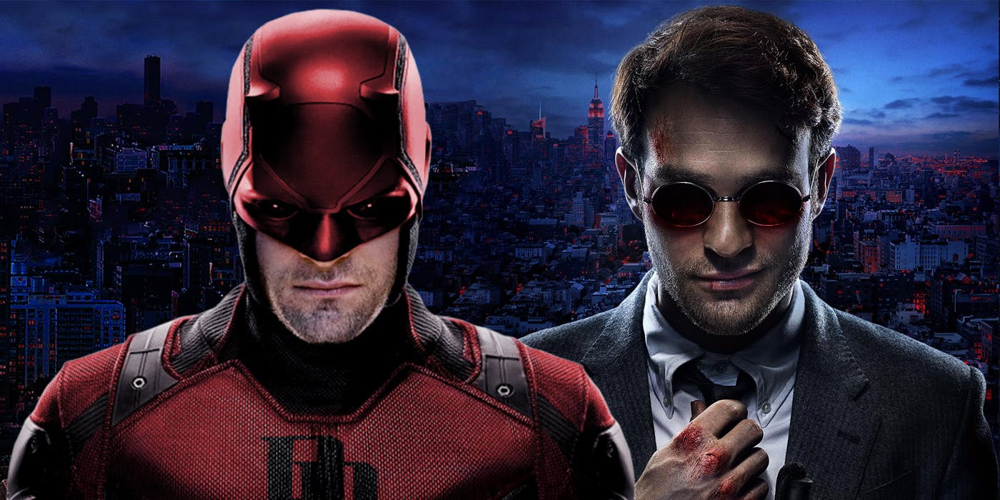
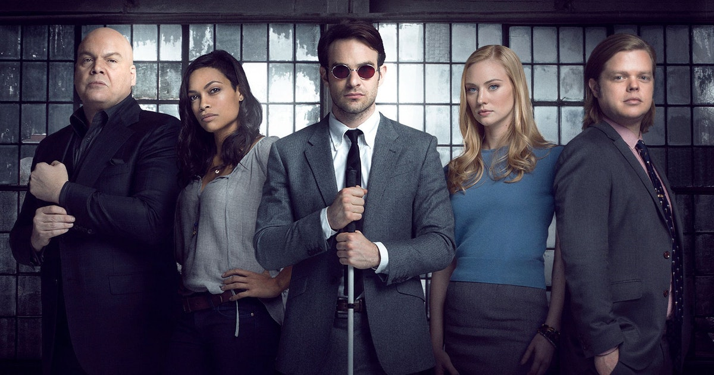

About Daredevil
Daredevil, aka Matt Murdock, is a masked vigilante fighting crime by night and a blind lawyer defending citizens by day.
Daredevil and Matthew Murdock.
Daredevil's characteristics
- When he was nine years old, after a tragic car accident, he lost his sight when spilled radioactive chemicals injured his eyes.
- He then gained extrasensory abilities thanks to the radioactive chemicals and trained his senses to become a highly skilled fighter.
- When he isn't defending citizens as an attorney by day he secretly fights criminals throughout Hell's Kitchen New York by night.
Daredevil fighting against Hell's Kitchen criminals.
Daredevil's enemy and friends
From left to right: Wilson Fisk, Claire Tempel, Matt Murdock, Foggy Nelson, Karen Page.
Along his journey, Daredevil encounters some friends and foes. Click on the links below to learn more about them.
- Wilson Fisk is the most feared, dangerous and powerful crime lord of New York. He is Daredevil’s archenemy.
- Claire Tempel is a night shift nurse who works at Metro-General Hospital and takes care of Daredevil whenever he is injured during his missions.
- Karen Page works as a secretary for the law firm ‘Nelson and Murdock’ and is Daredevil’s love interest.
- Foggy Nelson is Daredevil's long life best friend and his law partner of ‘Nelson and Murdock’.